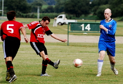
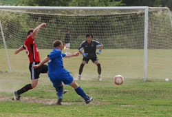
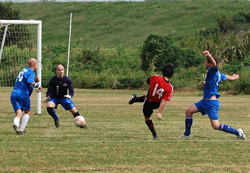
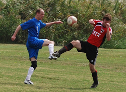

|
Misato, Saturday 26th September
With a major point to prove after a shocking defeat to the Geckoes, and a burning desire to get their first win, Sala were super fly TNT right from the off in this one. And heeding the words of their Captain, Herr Geisler, they "closed and opened the fist" more frequently and expertly than a..................well, I'll let u finish that off yourselves as it really depends on what kind of videos you watch. Are you more a "Rocky" kind of guy or "Anastasia's Odessey to Uranus"??
Some great passing early on and some nice little triangles in midfield (dainty ones like Kraft make with cream cheese) quickly led to chances for Sam, Stu, Guido and Toby. But with the Jet's defenders acting like keepers, blocking umpteen shots inside the 18 yard box with their heads, legs and feet (not there fists mind) it was an impenetrable barrier that Sala faced in the first 20 mins. Much like the brave Anastasia in her film.
So, Saitama Jets took to defending deep but with Guido winning every header in midfield they were hemmed back in even when clearing their lines. Eventually the first goal did come though, and when it did, it had a little touch of luck to it. Birthday boy Sam swerved a wicked corner kick straight in to the net.
Did he mean it?? No chance! 1-0 Sala
The match continued in much the same way until half time with Sala dominating possesion, and the Jets rarely getting out of their half but defending admirably. Most of Sala's threat was coming from Shige and Scotty "The Phantom Spitter of Misato" playing balls wide to the Sala wingers. Sam, looking lean and hungry, was terrorising the Jet's rightback with his pace and trickery, whilst Brookey, looking gorgeous as any tarrento should, was serving up loads of delicious crosses. Unfortunately, nobody could apply the necessary finish.
Halftime 1-0 Sala

Having been 2-0 up at halftime following a similar performance in their first game, Sala came out determined not to collapse in the 2nd half against the Jets. However, football is a funny old game, as Greavsie used to say, and amazingly, it was Sala's keeper who was tested most in the 10mins after the restart. Masa, deputising in goals, punched 2 blistering shots over the bar before Shigella (as Shige's known when using predictive text) scored Sala's second against the run of play. After twisting and turning on the edge of the box he despatched a low shot into the bottom corner. 2-0 Sala
It was a cruel blow for the Jets, coming after their best passage of play, and it signalled the end of their resistance, with Sala banging in 3 more goals in the final 30 mins. All of Sala's training and preparation during pre-season seemed to suddenly fall into place in this last 30 mins, and the Jets simply didn't have an answer.
Sala new boy, Rowley was played down the wing by Ian, and having skinned the Jets fullback he cut back a perfect ball to Toby who tucked it low into the far corner. 3-0 Sala
Shigella, now rivalling Anastasia in the dirty name stakes, should have made it 4 shortly after, having been sent through by Scotty's pass of the day, but twisting and turning more than Anastasia ever did he overcooked his run up to the keeper and then shot wide. Disappointing little minx.
Sala's fourth came after more sustained pressure. Having reset following an attack, the ball was fed back to Ian who drove a cross to the far post. A Jets defender missed the flight of the ball and Sam chested it down, took it inside another defender and placed it into the corner. 4-0 Sala
Brookey then gave Sam the perfect birthday present when he won a penalty and let Sam take it. Obviously, he hadn't spotted Pete Swinney on the sidelines with a camera! Sam, as cool as a little Fonzie, sent the keeper the wrong way and that was it. Game, set and match. 5-0 Sala
Man of the Match - Sam Matthews
Sinner of the Match - Obviously, Anastasia or Shigella
Report by Scotty 'No P' Thomson.
|

 |